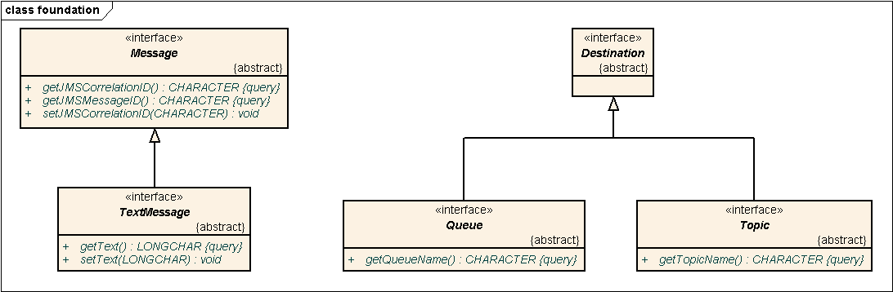
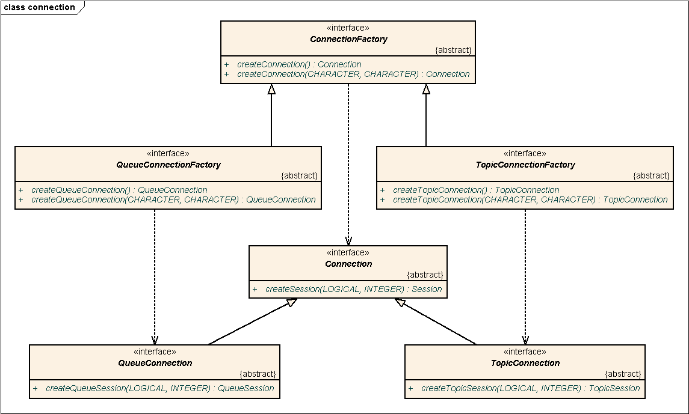
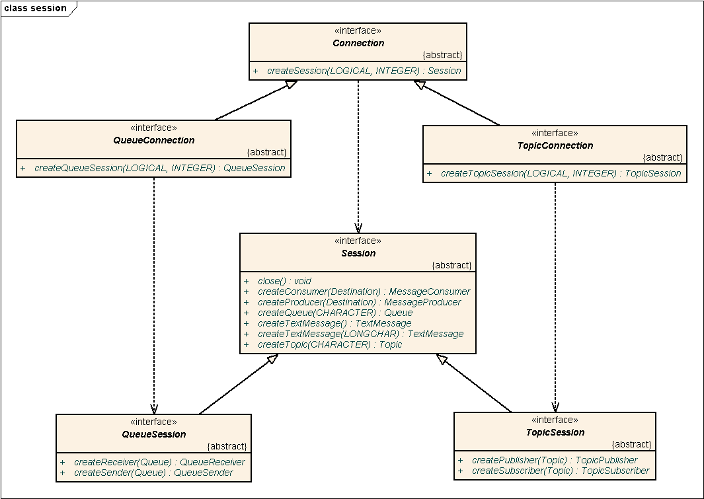
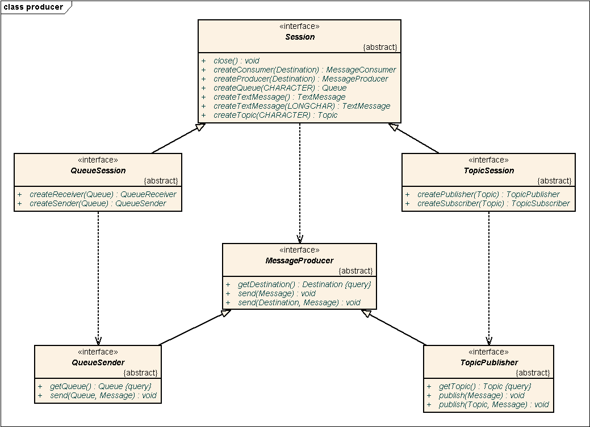
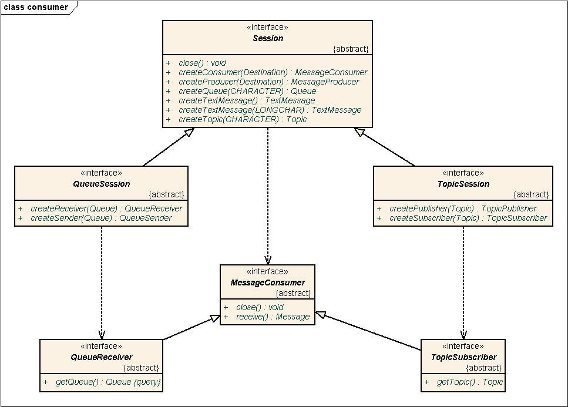

OpenEdge Adapter for Fuse Message Broker API
The API supported by the adapter is a subset of the JMS API. Full
documentation of all details is available online. The
diagrams below only describe the part of the API that is implemented by the
OpenEdge Adapter for Fuse Message Broker.
Notes:
- Getters and setters are actually implemented as ABL PROPERTY members.
- The actual interface definitions contain operations not specified in the
JMS API or the diagrams. Those operations are workarounds for OpenEdge™
limitations. When those limitations are resolved, the additional operations
might be removed.
- The actual interface definitions might contain additional JMS 1.1
operations that are not currently supported by adapter implementation
classes.




